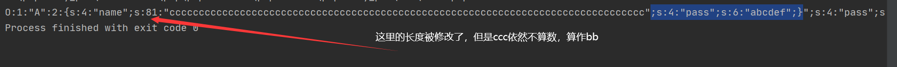
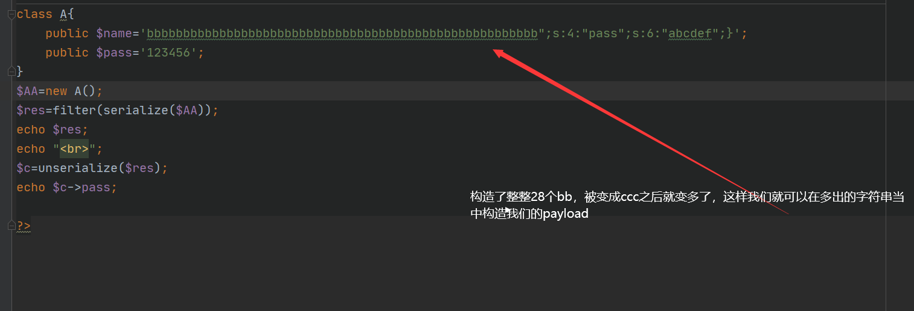
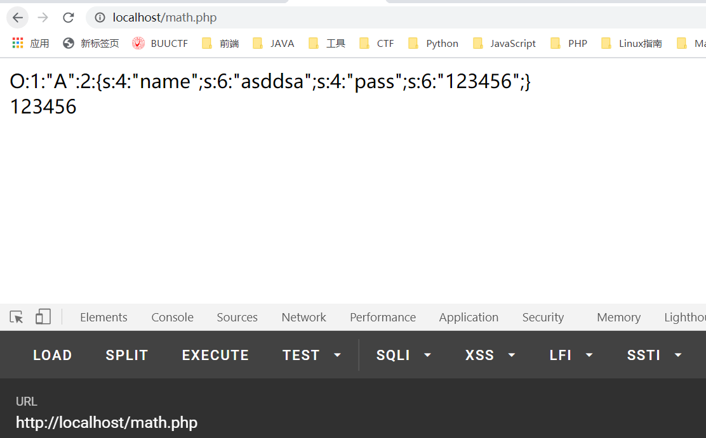

反序列化逃逸
十一月 20, 2020
也算是多做做总结吧
变长
从网上看来的那么一段代码：
1 |
|
我们需要做到的是，如何修改$pass的值？
首先当我们序列化一段A的的话得到的结果如下：
1 | O:1:"A":2:{s:4:"name";s:4:"aaaa";s:4:"pass";s:6:"123456";} |
并且我们注意到它会把bb变成ccc，当他序列化的时候，已经完成了，但是经过过滤之后它的字符串会变长，经历的是这么一个过程:

同时，反序列化还有这么一个特点，一旦读取到}，他就会停止，不会再读取后面的内容，这样的话就很好解释了，我们构造payload如下：

成功修改了结果！
那么如果是变短的情况下呢？
长短的区别：
和前面变长的原理是不一样的，在反序列化逃逸变长的情况下，你需要做的是拼接自己后面需要写的东西，所以你所需要补充的长度=你payload的长度，并且你是写到末尾出现} 为止，以此来使得后面的字符串丧失作用！！！！！！，也就是说如果是变短的字符串逃逸，你需要能够控制两个变量！
变短：
而变短则截然不同，如果你需要变短，你要做的是吃掉你想要修改的部分的前面的part的全部
我们一样的先看正常的情况下是如何进行序列化的

1 | O:1:"A":2:{s:4:"name";s:9:"dasasdasd";s:4:"pass";s:5:"asdas";} |
如果我们想要操作pass密码部分（控制后面的18是为了控制长度）的话，我们要吃掉的是
1 | ";s:4:"pass";s:18:" |
那就很简单了，我们算一算这段的长度就好了！！！！！算出来是19，那我们写38个b，拼出来剩余19个，之后呢，我们去复写前面的那一段的内容就好了！
1 | O:1:"A":2:{s:4:"name";s:38:"ccccccccccccccccccc";s:4:"pass";s:0:"";} |
过滤之后只剩下：
1 | O:1:"A":2:{s:4:"name";s:38:"ccccccccccccccccccc";s:4:"pass";s:4:"asds";}";} |
一些魔术方法：
1 | __wakeup() //使用unserialize时触发 |
查看评论